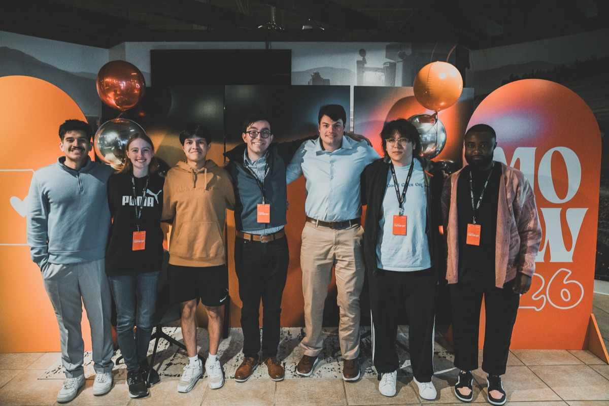
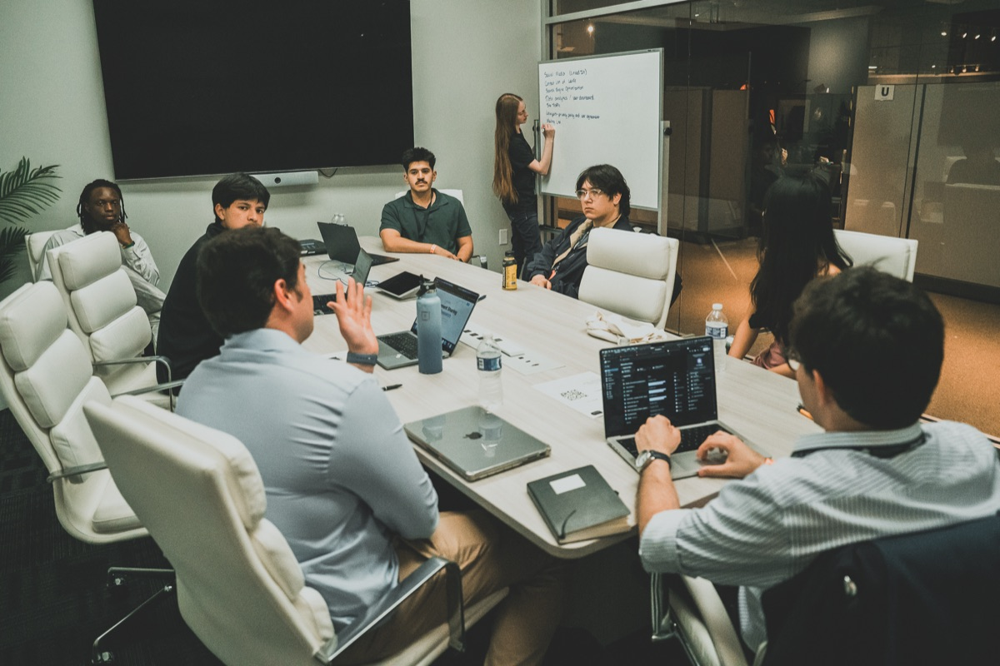

Hello World
I'm
ANNA
MARKWAY
Quantitative Finance | Data Science | Machine Learning | AI Engineering
No time to browse? Query an AI agent trained on my resume and portfolio, schedule a chat with me, or download or preview my resume.
University of Missouri - Columbia
Physics and Computer Science Student
I love learning. It is very difficult to find a subject I'm not curious about. I've built technical skills through coursework and internships, and developed a rounded knowledge of other fields through events and communities.
Graduation: May 2028
GPA: 4.0
Calculus and Differential Equations
Statistical Survival Analysis
Statistical Models
Algorithm Design and Analysis
Data Analysis with Plotly, Matplotlib, and Seaborn
AI and Machine Learning
Computational Intelligence
Thermodynamics and Statistical Physics
Materials Science
Electronics
Classical Mechanics
Quantum Mechanics
Superconductors
Jun 2026 – Jul 2026
PFC Financial Analysts Data Intern
Aug 2025 – May 2026
Data Analytics and Governance Student Associate
May 2025 – Aug 2025
Operational Efficiency Summer Intern
A few portfolio highlights of my most impactful projects
I love building things and being around people who are trying to build something new.
I've always been drawn to the entrepreneurial side of technology: identifying problems, testing ideas, talking to customers, and figuring out how to turn an idea into something people actually want.
I compete in pitch competitions and startup weekends and immerse myself in entrepreneurship communities wherever I go. I love hearing how other people think about problems, learning from founders, and getting exposed to industries and ideas outside of my comfort zone.
I haven't founded a startup of my own, and I'm perfectly happy with that. For me, entrepreneurship isn't a title I'm trying to earn; it's a way of thinking I genuinely enjoy learning about. I want to keep putting myself in rooms with people who are building, experimenting, and following their passion.


I volunteer with STEM Cubs, an organization on campus dedicated to introducing young students to STEM. I create STEM lessons and teach them on the Saturday events to groups of 40-50 3rd-5th graders.
I am currently on the executive board of Claude Builder Club, an organization on campus dedicated to helping students learn how to effectively and ethically use AI in their academics and future career.